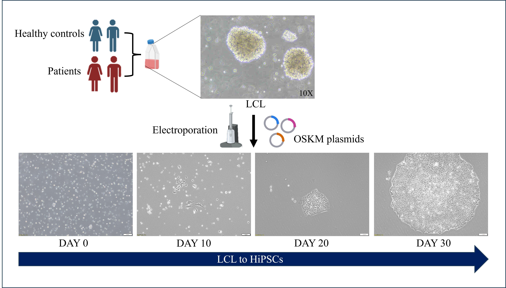
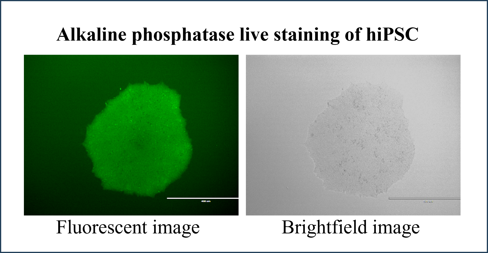

Project 1: Generation and characterization of human induced pluripotent stem cells (hiPSCs) from neurological patients
LCL to iPSC generation
Somatic cells from patients are collected and made immortalized using EBV virus called lymphoblastoid cell lines (LCL) are reprogrammed using Yamanaka factors (Sox2, Oct4, c-myc,Klf4) through electroporation. These iPSCs are then stored in biorepository. This can be used by researchers for regenerative medicines, drug discoveries and various disease modeling.
 Characterization of generated hiPSCs for quality control check
Generated iPSCs undergo characterization assays such as immunofluorescence to check for pluripotency markers (Oct4, SSEA4) and embryoid body formation to assess trilineage differentiation potential. STR analysis is performed to confirm that the generated iPSCs match the parental line from which they were derived.


Project 2: Lithium sensitivity in bipolar disorder using iPSC-derived cortical neurons
Project 3: Introducing point mutation in mild bipolar disorder patient iPSC to induce severity
Project 4: Mechanoresponsive signaling pathways and drug target identification in vascular malformations
- Part 1: Altered hemodynamics in the pathophysiology of varicose veins
- Part 2: Altered hemodynamics mediated endothelial to mesenchymal transition in cerebral arteriovenous malformations